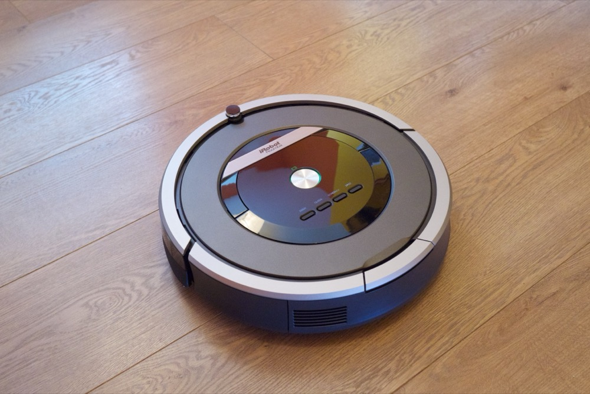
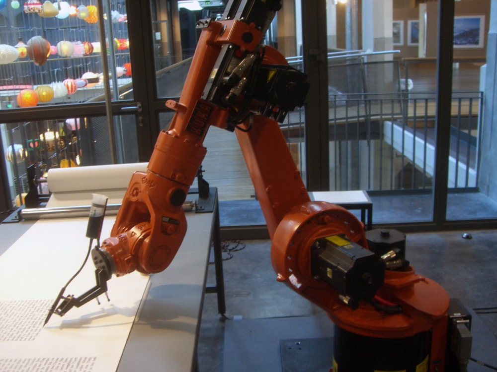
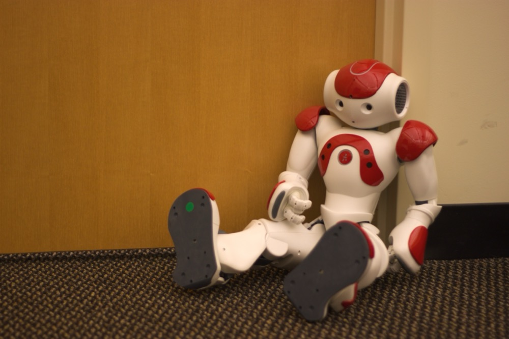

寫俾零機械人底子嘅隊員。唔使 programming、唔使工程底,由「咩係機械人」一路讀到「機械人有幾自主」。每課有 🎮 互動練習即場試,最後有開卷測驗(滿分 100,100 分先合格,答到全對為止)。讀完一課撳「完成呢課」,頂部進度條會記住你去到邊(記喺你自己部機)。
問十個人「機械人係咩樣」,九個會諗到科幻片:一嚿金屬、兩隻手、識行識講、似人。呢個印象太窄 —— 窄到會令你認唔出身邊真正嘅機械人。
掃地機械人(扁扁一嚿)、工廠焊嘢嘅機械臂(淨係一條臂)、識自己泊位嘅車、你哋部無人機 —— 全部都係機械人。「似唔似人」同「係唔係機械人」完全冇關係。



三個都係機械人,得一個似人。相片來源(Creative Commons,已標作者):掃地機 © Kārlis Dambrāns, CC BY 2.0 · 機械臂 © Mirko Tobias Schäfer, CC BY 2.0 · 人形 Nao © Jiuguang Wang, CC BY-SA 3.0
有個簡單驗身法 —— 睇佢夠唔夠三樣:
| 邊樣嘢 | 算唔算 | 點解 |
|---|---|---|
| 遙控車 | 唔算(或半部) | 冇「思考」—— 你唔㩒佢唔郁,㩒佢撞牆佢就撞牆,個腦係你 |
| 洗衣機 | 唔算 | 按死程序,唔理衫多衫少、污定清 —— 呢種叫「自動化」,爭咗「識睇情況變」 |
| 掃地機械人 | 算 | 撞牆識轉、跌樓梯口識縮 —— 用當下感應到嘅嘢改動作,三樣齊 |
呢條界唔係楚河漢界。遙控車加咗「自己避障」就開始踩入機械人嗰邊。重點唔係死記,係識問嗰條問題:「佢有冇用感應到嘅嘢,自己改動作?」
你哋部無人機就係一部教科書級飛行機械人:感應(GPS 知位置、IMU 知姿態、鏡頭睇畫面)→ 思考(飛控每秒計幾百次點拉返平衡)→ 動作(四個馬達出力)。
最能說明問題嗰下係 RTL 自動返航:電低或者失訊,你冇撳任何嘢,隻機自己決定飛返起飛點 —— 冇人落指令,佢用感應到嘅狀況自己做決定。呢一下,就係「機械人」同「遙控玩具」最清楚嘅分界線。
佢強項係唔攰、唔驚、夠精準;弱項係離開設定就即刻蠢、唔識變通、會壞會冇電。唔好因為「佢係機械人 / 有 AI」就信佢多過信自己雙眼 —— 你嘅工作係識得幾時信佢、幾時接管。
課 1 講三件功能(感應-思考-動作);今課睇佢哋嘅硬件:感應靠感應器、思考靠控制器、動作靠驅動器。但三件都要食電,所以加多一件貫穿全身嘅 —— 電源。三件事,四件嘢。
| 部件 | 對應 | 係咩 / 無人機例子 |
|---|---|---|
| 感應器 Sensor | 感應 | 機械人嘅眼耳鼻:GPS(位置)、IMU(姿態)、鏡頭(畫面)、雷達(距離) |
| 控制器 Controller | 思考 | 機械人嘅腦:一塊細電腦板,不停「睇→計→落指令」。無人機就係飛控 |
| 驅動器 Actuator | 動作 | 機械人嘅手腳肌肉:馬達、螺旋槳、機械臂關節 |
| 電源 Power | 養住全部 | 命脈:LiPo 電池。冇電全部即刻變廢鐵 |
① 驅動器係四件嘢入面「用電最兇、最易整親人」嗰件 —— 螺旋槳、機械臂係真係有力、真係會郁。
② 電源要當大事:好多「機械人出事」個腦冇壞,係電出事(電池鬆脫、電壓跌令個腦重啟)。睇一部機械人,先睇佢點食電、電低會點做。
電養住全部;感應器餵資訊入控制器 → 控制器落令畀驅動器 → 驅動器一郁,環境就變 → 感應器又收到新情況…… 個圈一路轉。任何機械人拆到底都係呢四嚿。(呢個圈,就係課 3 主題。)
所有會郁嘅機器分兩種,分界線得一條:做完之後,會唔會回頭睇下結果?
| 類型 | 特徵 | 例子 |
|---|---|---|
| 開環 Open loop | 落咗指令就唔理結果,做完唔檢查 | 微波爐叮 30 秒(唔管熱咗未)、盲住眼掟嘢入桶 |
| 閉環 Closed loop | 做完感應結果、同目標比、唔啱就修正 | 冷氣(盯住溫度)、定速巡航、無人機定點懸停 |
目標(想幾暖)→ 感應(手感覺水溫)→ 比較(爭幾多 = 誤差)→ 修正(扭熱少少)→ 再感應…… 你唔係一下扭到啱,係微調幾次。機械人做嘅一模一樣,只係佢一秒微調幾百次,快到你以為佢一下到位。
無人機定點懸停就係活教材:就算冇風,你都見隻機輕輕震 —— 嗰啲正正係佢不停感應 + 修正緊嘅證據,佢一刻都冇停低唔理。
感應器一盲,閉環即刻斷 —— 機械人會失控,因為佢「回頭睇」嗰隻眼盲咗,唔知自己歪緊。你哋 GPS 失鎖跌 ATTI 嗰種驚險,底層原因就係咁:唔係個腦蠢咗,係佢對眼盲咗。
另外閉環叻極都有極限:風太大、誤差太離譜,佢修正唔切一樣會炒 —— 唔好當「佢會自己救返」係無限。
修正唔係越大力越好。太大力會衝過頭、左右擺(好似沖涼扭太多熱水,跟住太熱又扭凍)。呢個現象解釋咗點解有時機械人 / 無人機會無故「抖」或者「畫龍」。你唔使識點計,識得有呢個現象就夠。
唔係「有 AI 就自主、冇就唔自主」。係一條由「你唔郁佢就死」到「佢乜都自己搞掂」嘅斜路。搞清楚一部機械人企喺邊一級,比問佢「係咪 AI」有用一萬倍 —— 因為每一級,你同佢嘅責任分工都唔同。
| 級 | 佢做到咩 | 無人機對照 |
|---|---|---|
| 0 純手動 | 你唔落令佢唔郁,放手就冧 | 手動 / Acro(冇自穩) |
| 1 輔助穩定 | 幫你保持平衡,但唔守位、唔記路 | 自穩 / Attitude(有自穩、冇 GPS 守位) |
| 2 定點守位 | 放手守住個位、定住個高 | 定點 / Position 懸停(有 GPS) |
| 3 半自主任務 | 你設目標,佢自己執行,你隨時接管 | 自動返航 RTL、航點任務 |
| 4 高度 / 全自主 | 畀個高層目標,佢自己規劃 + 應變 | 全自動巡航 + 避障(部分先進機接近) |
上面啲 mode 名(Acro / Attitude / Position / RTL / 任務)喺唔同廠、唔同飛控(例如 PX4 同 ArduPilot)叫法會有出入。呢度用嚟解釋概念,實際隊上用邊個名、每個 mode 具體點行,一律以你哋自己部機同 SOP 為準,唔好照抄。
自主越高,跟住三個代價:① 越似黑箱(睇唔明佢點解咁做)② 出錯你越遲發現 ③ 離開設定場景越易做蠢嘢。所以揀邊級,要按任務風險揀:悶 + 可預測 → 高自主啱;複雜 + 高風險 + 要執生 → 低自主(人手)反而穩陣。
高自主最危險嘅唔係機,係人 —— 機一直做得好,人就鬆懈走神(automation complacency 自動化過度信任),到出事嗰下反應唔切。呢個正正解釋你哋條 SOP:就算撳咗 RTL / 行緊自動任務,都要保持 VLOS、手指擺喺 mode switch 附近 —— 要 keep 住自己喺迴路裡(human-in-the-loop),隨時接得返手。
新手最易問「邊種機械人最勁」—— 呢條問題冇答案,好似問「邊種車最好」。跑車快但載唔到貨,𨋢車慢但搬得起山。機械人個形態係跟佢要做嘅任務設計,呢個原則叫 form follows function(形態跟任務)。
| 形態 | 強項 | 弱項 | 典型用途 |
|---|---|---|---|
| 輪 / 履帶 | 平地快、慳電、穩 | 上唔到樓梯崎嶇地 | 倉庫送貨、掃地、巡邏 |
| 腳(足式) | 跨障礙、上樓梯山路 | 複雜、慢、貴、易跌 | 崎嶇地巡查、搜救 |
| 飛(無人機) | 睇得闊、去得快 | 續航短、怕風、載重細 | 航拍、測量、巡檢 |
| 水下 | 去到人潛唔到嘅深度 | 通訊難、多數要拖線 | 水底 / 船底檢查 |
| 機械臂 | 固定位精準重複 | 唔識行、要搬工件過嚟 | 工廠裝配、焊接、手術 |
| 人形 | 通用、似人環境啱 | 最難、最貴、最唔成熟 | 研究、示範、特定服務 |
你哋部無人機就係「飛」呢個形態 —— 睇得闊去得快,但續航短、怕風、載重細,呢啲就係飛行形態本身嘅 trade-off。水下機械人最大難題唔係游,係通訊(水擋無線電,多數要拖線)—— 正好呼應課 3:通訊斷,閉環就斷。
人形機械人 demo 最搶鏡,但現實做實事好多時係一個輪 + 一條臂,又平又可靠,贏過一部型爆嘅人形。揀形態睇任務,唔係睇科幻感。
機械人幾叻都好,佢有個死穴:佢喺設定範圍內做嘢,但唔識判斷「咁樣會唔會整親人」。佢唔係惡意,係根本冇呢個概念。所以有一條貫穿全部嘅大原則:安全嗰半,永遠係人孭。
| 通則 | 重點 |
|---|---|
| 急停 E-Stop | 行近一部機械人第一件事:搞清楚佢急停喺邊、點撳。同你哋 kill switch 一個道理 —— 出事一刻冇時間諗。 |
| 動作範圍 | 佢郁得到嘅範圍 = 危險區。機械臂最伏:靜止 ≠ 安全,佢隨時掃過成個範圍。企範圍外。 |
| 供電 + 復電 | 接電前確認電壓接線(課 2);通電一刻可能突然郁,隻手要企開;維修前斷電上鎖(lock-out)。 |
機械人靜止,可能只係喺度等下一個指令,隨時會郁。當佢隨時會郁嚟對待。再加課 4 一句:佢行緊自動你都要監督,唔好鬆懈(automation complacency)。
總綱:同機械人做嘢,唔係唔信佢 —— 係「信佢做到件事,但唔信佢會顧住你」。佢負責做嘢嗰半,你負責安全嗰半;呢半嘢,佢幫你唔到。
.jpg){kind=link}
{kind=link}
{kind=link}